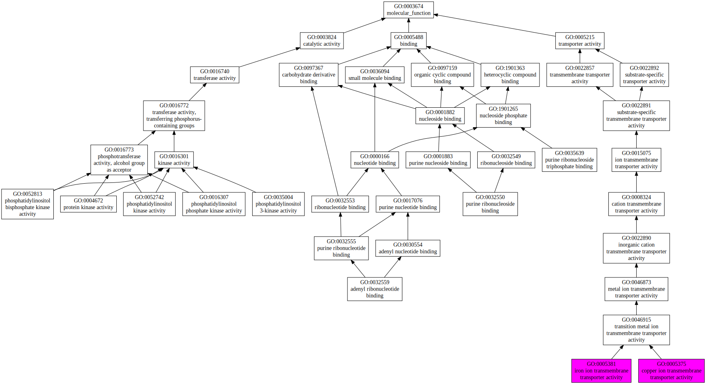
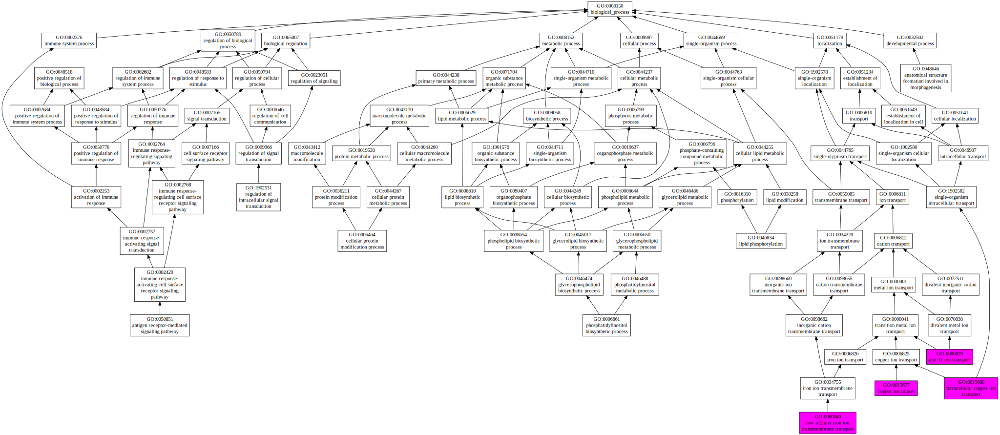
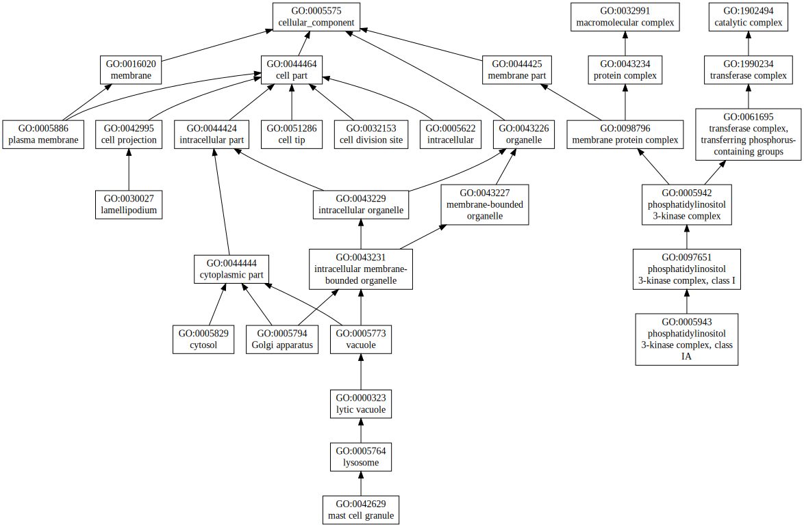

|

|
| GO term | CscoreGO | Name |
| GO:0005381 | 0.30 | iron ion transmembrane transporter activity |
| GO:0005375 | 0.30 | copper ion transmembrane transporter activity |
| GO:0052813 | 0.05 | phosphatidylinositol bisphosphate kinase activity |
| GO:0052742 | 0.05 | phosphatidylinositol kinase activity |
| GO:0035639 | 0.05 | purine ribonucleoside triphosphate binding |
| GO:0035004 | 0.05 | phosphatidylinositol 3-kinase activity |
| GO:0032559 | 0.05 | adenyl ribonucleotide binding |
| GO:0032550 | 0.05 | purine ribonucleoside binding |
| GO:0016307 | 0.05 | phosphatidylinositol phosphate kinase activity |
| GO:0004672 | 0.02 | protein kinase activity |
| Download full result of the above consensus prediction. |
| Click the graph to show a high resolution version. |
| (a) | CscoreGO is the confidence score of predicted GO terms. CscoreGO values range in between [0-1]; where a higher value indicates a better confidence in predicting the function using the template. |
| (b) | The graph shows the predicted terms within the Gene Ontology hierachy for Molecular Function. Confidently predicted terms are color coded by CscoreGO: |
| | [0.13,0.5) | [0.5,0.6) | [0.6,0.7) | [0.7,0.8) | [0.8,0.9) | [0.9,1.0] |
|
|
|

|
| GO term | CscoreGO | Name |
| GO:0015680 | 0.13 | intracellular copper ion transport |
| GO:0015677 | 0.13 | copper ion import |
| GO:0006829 | 0.13 | zinc II ion transport |
| GO:0000040 | 0.13 | low-affinity iron ion transmembrane transport |
| GO:0046834 | 0.04 | lipid phosphorylation |
| GO:0006661 | 0.04 | phosphatidylinositol biosynthetic process |
| GO:0006464 | 0.03 | cellular protein modification process |
| GO:1902531 | 0.02 | regulation of intracellular signal transduction |
| GO:0050851 | 0.02 | antigen receptor-mediated signaling pathway |
| GO:0048646 | 0.02 | anatomical structure formation involved in morphogenesis |
| Download full result of the above consensus prediction. |
| Click the graph to show a high resolution version. |
| (a) | CscoreGO is the confidence score of predicted GO terms. CscoreGO values range in between [0-1]; where a higher value indicates a better confidence in predicting the function using the template. |
| (b) | The graph shows the predicted terms within the Gene Ontology hierachy for Biological Process. Confidently predicted terms are color coded by CscoreGO: |
| | [0.08,0.5) | [0.5,0.6) | [0.6,0.7) | [0.7,0.8) | [0.8,0.9) | [0.9,1.0] |
|
|
|

|
| Download full result of the above consensus prediction. |
| Click the graph to show a high resolution version. |
| (a) | CscoreGO is the confidence score of predicted GO terms. CscoreGO values range in between [0-1]; where a higher value indicates a better confidence in predicting the function using the template. |
| (b) | The graph shows the predicted terms within the Gene Ontology hierachy for Cellular Component. Confidently predicted terms are color coded by CscoreGO: |
| | [0.14,0.5) | [0.5,0.6) | [0.6,0.7) | [0.7,0.8) | [0.8,0.9) | [0.9,1.0] |
|
|
|